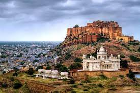

Mehrangarh Fort covers an area of 1,200 acres (486 hectares) in Jodhpur, Rajasthan, India. The complex is
located on a hilltop around 122 metres above the surrounding plain, and was constructed c. 1459 by Rajput
ruler Rao Jodha, though most of the existing structure is from the 17th century. Inside its boundaries there
are several palaces known for their intricate carvings and expansive courtyards, as well as a museum housing
various relics. A winding road leads to and from the city below. The imprints of the impact of cannonballs
fired by attacking armies of Jaipur can still be seen on the second gate. At the north-east of the fort is
the chhatri of Kirat Singh Soda, a soldier who fell on the spot defending Mehrangarh.
There are seven gates, which include Jai Pol (meaning 'victory gate'), built by Maharaja Man Singh to
commemorate his victories over the Jaipur and Bikaner armies in 1806. The Fattehpol (also meaning 'victory
gate'), commemorates victory of Maharaja Ajit Singh over the Mughals.